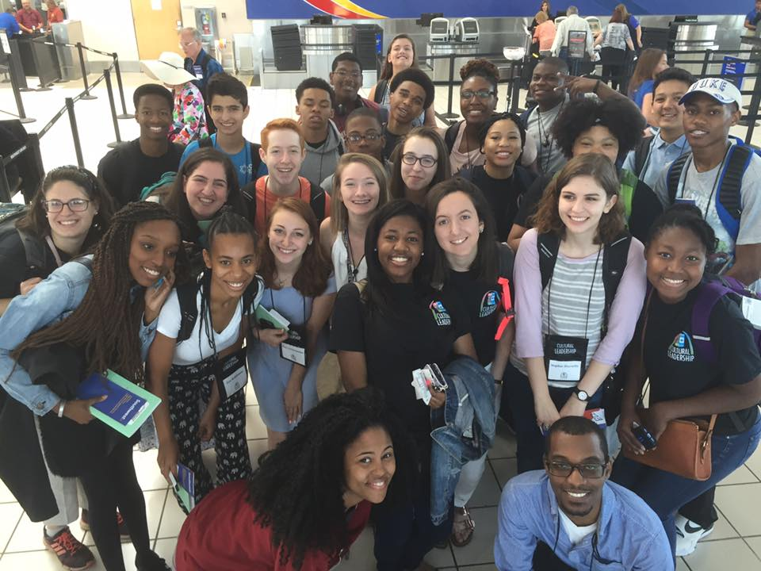
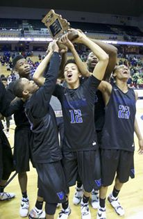

Greatest Memories
I always had the aspiration to travel the world and fly on a plane someday, but those were just dreams that I had, never
really thought it would be a reality. But one day one of my high school teachers told me about this program that
goes on a 21 day trip and talk about social justice issues and talk about ways to solve them. While traveling
the world and talking about those issues, she told me that we were going to experience a lot of things and see
people that others would probably never get to see in person. So after applying for this trip I was 1 of 26 people
that were accepted for the trip. There were about 100 people that applied for the trip. I so during the end May
I rode my first air plane, traveling to New York... Never thought I'd be visiting New York at that age, and seeing
the things I did. Starting in the North traveling all the way down towards the South in 21 days was something
I'll never forget. That was the first time I was away from my family for so long in my life, however, everything
went fine... Despite some of the aruguments, hot days, tiring mornings, to the late nights. Those memories were
unforgettable! Cultural Leadership was a program that actually changed my life and made me view a lot of things
from a different perspective.

Becoming a state champ was one of the best days of my life... The days that we beat the team to go to State
was when I was one of the happiest days of my life. It all started at school that first day of practice, we realized what our goal was for the year, so we had to practice everyday as hard as we could to accomplish this goal. As the season went on we won our first couple of games, but I wasn't as satisfied as I should have been, one reason being that I wasn't given any playing time. There were games when I didn't play at all, and I had never ever experienced this before, so this gave me thoughts of quitting. But one thing I promised myself in life was to never quit, and that has been something that I have held up to till this day. However, we finished the season 23-4 after going through all of the different trials throughout the season, I finished the season successfully.
